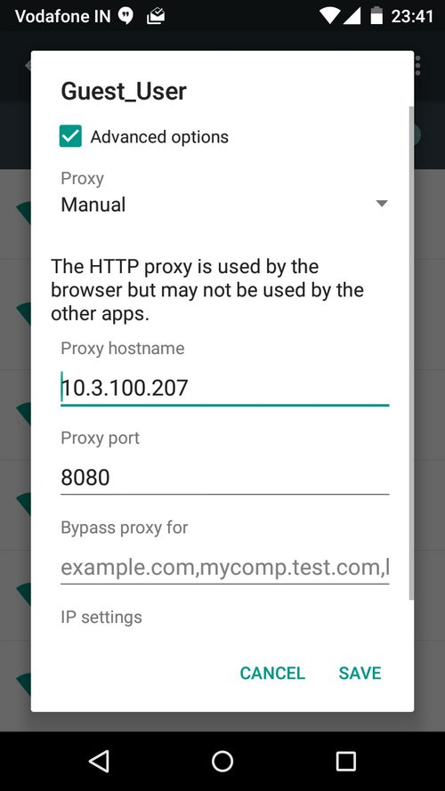

References / Operating system / 109
Android 5.0 Lollipop
The Android release that shipped Material Design in 2014, rebuilding the system interface around flat color, paper-like dialogs, and ink-colored accents.
- Source
- Wikipedia: Android Lollipop
- Creator
- Google and the Android Open Source Project
- Made
- 2014 (unveiled 25 June 2014, released 12 November 2014, per Wikipedia)
- Style
- Material Design (agent-proposed, not yet reviewed by a person)
- Moods
- Orderly, clean, tactile
- Evidence
- Opened the Wikimedia Commons screenshot Android proxy settings.png (a Wi-Fi proxy dialog on Android 5, uploaded by Amrav, 2015) as a 500 × 889 rendering, and an AOSP home-screen screenshot (Android 5.1-pkp-file-01-08-2024.png, 960 × 1707 rendering) on 28 September 2026. The home screen still mixes older icons, so the dialog is the stored example.
- Reviewed
- Rights
- Open license, stored. License: CC-BY-SA-4.0. Rights policy
Context
Wikipedia: “One of the most prominent changes in the Lollipop release is a redesigned user interface built around a design language known as Material Design, designed to retain a paper-like feel.” Android 5.0 was unveiled at Google I/O on 25 June 2014, its source code was released on 3 November 2014, and the Nexus 6 was the first phone to ship with it. Wikipedia: Android Lollipop.
The same article quotes Matías Duarte: “unlike real paper, our digital material can expand and reform intelligently. Material has physical surfaces and edges. Seams and shadows provide meaning about what you can touch.”
Observed
- A white dialog with square corners floats over a list that the system dims to dark gray. A soft shadow separates the dialog from the list.
- One teal accent colors the checked checkbox, the active text field underline, and the two text buttons, CANCEL and SAVE, which are set in medium all-capital letters with no button outline.
- Text fields are a single underline with a small gray label above. The status bar is black, and the navigation bar shows flat outline glyphs of a triangle, a circle, and a square.
Why it belongs
The dialog is the style at its most basic: one opaque sheet at a high elevation, one accent hue, and text buttons instead of boxed buttons. It follows the dialog rules in the guidelines exactly.
Borrow
Mark the focused text field and the confirming actions with the same single accent color, and leave every other control gray.
Measured
Machine-extracted by tools/image-traits.py on . Full measurement.
- Mean chroma
- 0
- Palette
- #ffffff 63%
- #666666 9%
- #000000 8%
- #0c1011 6%
- #575757 4%
- #b8bab9 2%
- #eeefef 2%
- #161c1f 1%

